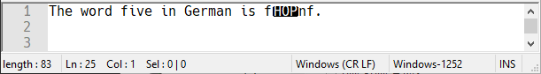

Limitations and known issues
These are known unfixable problems due to restrictions with the browser or operating system.
Preferred operating system and browser?
To reduce excessive CPU usage and battery drains, Chrome artificially limits the processing resources available to Extensions. So it can be slower than Firefox to render large ANSI documents or text that use RGB color controls.
Apple's macOS is the best platform to use RetroTxt. Regardless of the browser, it displays shaded characters and blocks with no artifacts or distortion.
For crisper text, make sure the Retina Display Scale is exactly half your screen resolution. For example, if a Macbook Pro 13.3" has a 2560 x 1600 resolution, you'd want the Built-in Retina Display to scale to 1280 x 800. Because of the high resolutions with many modern Apple products, you can also disable Use font smoothing when available.
Desktop Linux complicates things due to the number of varying components used by different distributions.
Firefox (at least on GNOME with Wayland), there are no artifacts, so it is the preferred browser on Linux.
Chrome and ChromeOS uses its internal font rendering, which suffers from the same artifacts as Chrome on Windows.
Regardless of the browser, Windows suffers from artifacts and distortions caused by its system wide font hinting.
BBS era ANSI
A lot of Bulletin Board System era ANSI art relied on an 80x25 fixed terminal with the cursor positioning to create motion and animations that do not convert using RetroTxt.
Fixing this would require a considerable amount of programming work for little reward. It would be a massive hit to browser performance, and most larger and complicated ANSI would probably never render as the browser would flag the tab as unresponsive.
MIME sniffing
Browser MIME sniffing will often override RetroTxt, forcing text files to download rather than display in a tab.
-
Firefox will usually produce incorrect MIME sniffing results with the
http(s)://protocol. -
Chromium-based browsers can produce incorrect MIME sniffing results with the
file:///protocol.
Unsupported text formats
-
Non-standard home computer ASCII such as Atari ATASCII and Commodore PETSCII texts, are not supported.
-
Binary formats such as .xbin and .bin are not supported as browsers refuse to render unknown file data on a page.
Missing or invalid characters
The following five characters, when used by text encoded in CP-437, will not display correctly in a web browser.
ü ì Å É ¥
One of the many issues with legacy 8-bit character encodings is that not all code pages use every available character. So while the original IBM CP-437 used by many ANSI art pieces has a full set of 256 characters, the browser-friendly Windows CP-1252 offers 251 characters.
For example, fünf German for five is a legitimate word in CP-437 (OEM-US) but breaks in Windows CP-1252.


Fonts and styling accuracy
-
The extension uses TrueType fonts, which are affected by the operating system font hinting; ClearType on Windows, Quartz in macOS, and FreeType on Linux. Oliver Schmidhauser has a useful summary of the issue.
-
Some fonts are for 40 column screens (characters per line of text), but the extension doesn't enforce that limitation.
-
The browser and the operating system can modify the font width, height, and space for either accessibility or due to user applied themes.